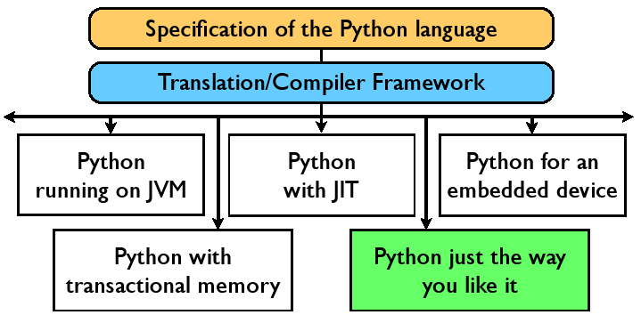
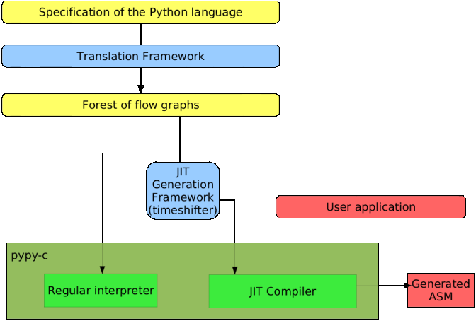

PyPy
Author:
Maciej Fijalkowski, merlinux GmbH
Title:
PyPy - Automatic Generation of VMs for Dynamic Languages
Date:
6th March 2008
VMs for dynamic languages
Example - Python
Coded in a low-level language, such as C (or Java or C#)
Hard-coded design decisions (garbage collection, threading model)
Primary example - CPython.
refcounting fixed hard to change
global interpreter lock hard to change
Ideally, we would...
Use a high-level language
Use a statically analyzable implementation language
Have a flexible compiler toolchain to do part of the job for you
Generating VMs
Writing by hand is a lot of trouble
We want to perform each of the following once:
encode the language semantics
encode language-agnostic design decisions (ie object model)
encode platform details
PyPy Motivation
Create highly-flexible compiler toolchain
Use high-level language for encoding semantics
Use compiler toolchain to try hard to make things such as object model orthogonal to language semantics encoding
Development technology
We use test driven development extensively
We've got a test suite which would need ~8 hours to run on a single processor
Our special testing tool, py.test, little hassle and a lot of features
Sprint-driven development
General idea

Even more
Take any interpreter, python, javascript, smalltalk...
Make some decisions (which gc to use...)
Compile it to your platform (C/POSIX, .NET, ...)
An example of benefit
Python has complicated semantics
Python guarantees that it won't segfault on a stack exhaustion
CPython includes some stack checks in the source, but they don't catch every case
We include it automatically so all cases are guaranteed to be covered
Example of static analysis
we analyze interpreter source, not user code!
replace all external calls with stubs
sandboxing - a very small piece of code to trust
build your own library (in python) which implements your own security policy
no need to worry about third party modules
RPython
We use RPython, a proper subset of Python to implement a Python interpreter
More static than Python
Designed for speed, and designed for writing interpreters
Still high-level, fully analyzable
User code (executed by the interpreter) is full python (not restricted)
Abstract interpretation
We start by importing the RPython modules on top of CPython
Next we analyze the bytecode and produce a forest of flow graphs
We call this the abstract interpretation of bytecode
The bytecode can be prepared dynamically (meta-programming)
Flow graphs
Intermediate representation
Can encode different layers of abstraction
Annotation
The part which does the type inference over existing graphs
A Powerful but practical type system
Still very high-level
RTyper
Translates high-level graphs into lower-levels
Two type systems:
lltype, for backends that understand pointers, structures etc.
ootype, for backends that have notion of objects
lltype has more low-level details, such as an implementation of strings (ootype assumes strings built-in)
Translation aspects
Optimizations (inlining, malloc removal)
Different GCs
...
GC framework
flexible
implemented as a translation aspect
gc-specific things, such as write barriers, are inserted automatically
different root finding strategies
effective (RPython is faster than C when GC is a bottleneck)
GCs are written in RPython as well
Motivation: MMtk
Backends
lltype-based - C, LLVM
ootype-based - CLI, JVM, ...
llinterpreter - a virtual backend for running flow graphs directly, useful for testing
.NET bindings, for example, are backend specific
Special translation aspect
generating Just-in-time compilers from interpreters
JIT - motivation
Interpreters are much easier to write than compilers
For many languages, one cannot achieve C-level performance with static analysis
Dynamic compilation can produce faster results than static compilation (e.g. a good Java VM versus gcj)
Traditional JIT approach
Written by hand
Carefully encoded language semantics
Hard to maintain as language evolves
We can do better!
PyPy approach to JIT

JIT - basics
partial evaluation
automatic generation of a compiler from an interpreter
an old idea with relatively few practical applications so far
JIT - general idea
constant-propagate python bytecode through the interpreter
may not yield good performance (our experiments show about 2x for removing intepretation overhead)
things such as the types of Python objects are still not known
Solution: promotion
Enhance partial evaluation to be able to
promote
run-time values into compile-time values
Implementation-wise this is a generalization of the polymorphic in-line caches used in Java VM JITs
Concrete ingredients
Variety of hints to guide partial evaluation
Promotion on certain paths to achieve "static-enough" parts
Lazy allocation of objects (allocation only happens when the object escapes)
Use CPU stack and registers as a cache for Python frame objects that live in the heap
Irrelevant to interpreter
These techniques can be applied relatively easily to other interpreters, just by adding a few hints
Or to any other program written in RPython (for instance a templating language where the templates are constant)
The hint annotator
This annotator is very similiar to the normal one; it adds color propagation
Green - compile-time, can be constant-folded
Red - runtime
Some rules about the color propagation
The rainbow interpreter
Very very experimental, lives on a branch right now
We dump colored graphs as a bytecode and interpret them
JIT details - backends
JIT backends produce assembly code from coloured graphs
As usual, we plan to have many (PPC, i386, JVM, dummy one...)
They're very rudimentary right now
It's a relatively pleasant job to write Python that generates assembler code
We would definitely benefit from help from an assembler expert
JIT conclusion
We're able to run carefully crafted examples ~60x faster than CPython
About the same as gcc -O0
We can definitely do better, for example by enhancing the backends
There is a lot of work to be done in JIT area
JIT plans
Faster than C!
For long-enough running programs that's theoretically possible
We have more information at runtime than one can have at compile-time
JIT short term plans
Compile just hotspots (not everything)
Extend backends and make them smarter
Make generating assembly code faster
Benchmark bottlenecks
It's not only technical
EU 6th Framework Programme
Actively searching for both grants and consultancy contracts
Project future
More JIT work
Making PyPy's python interpreter run existing applications
Interfacing with external libraries
We're very friendly for newcomers